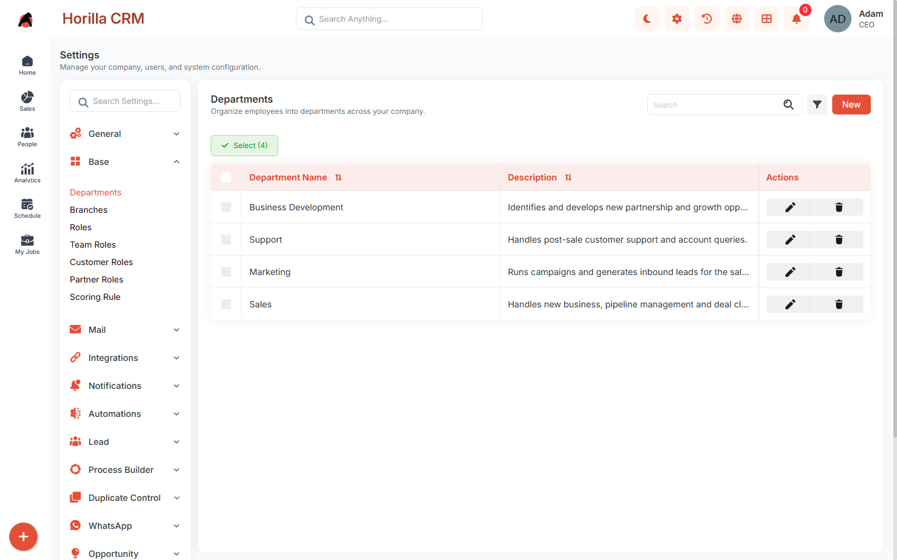
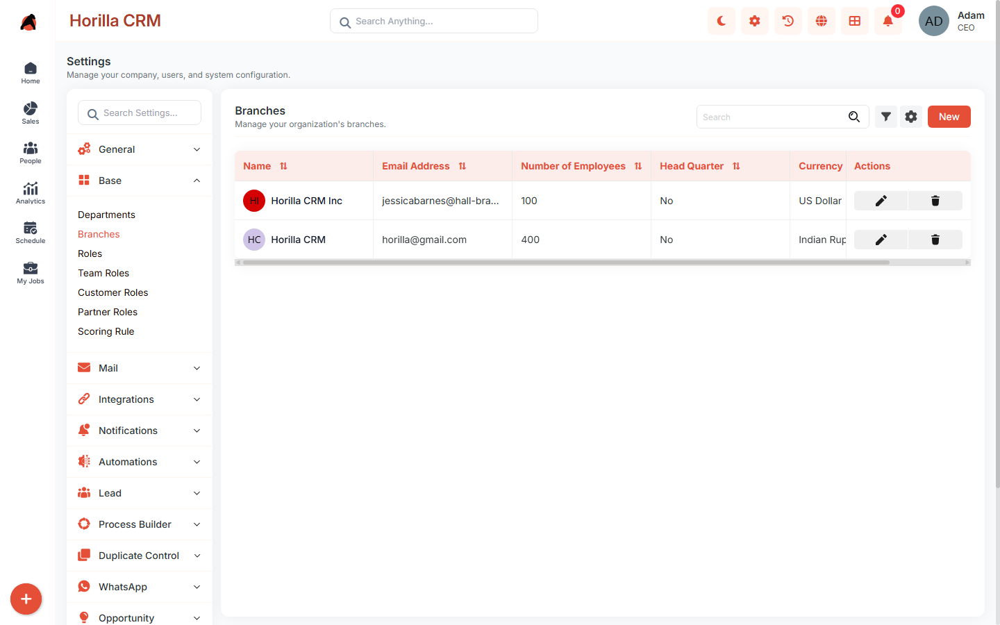
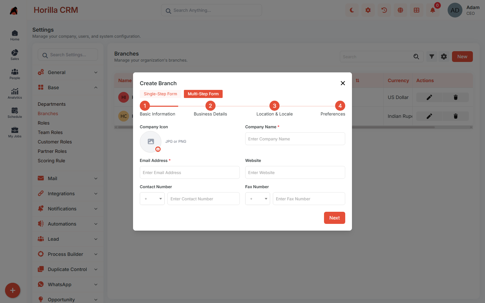
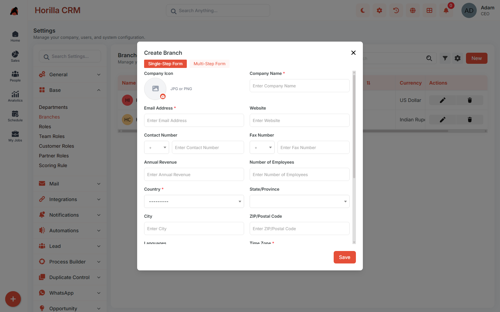
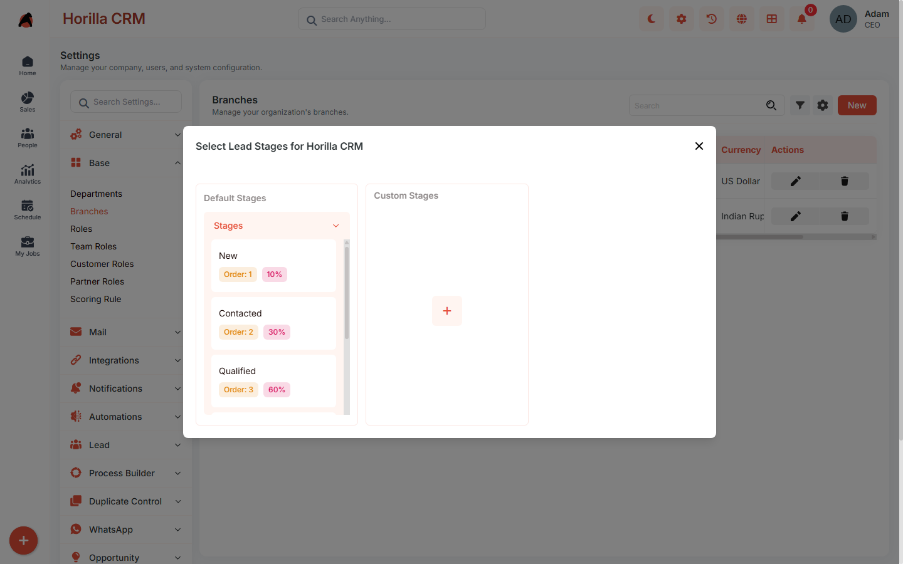
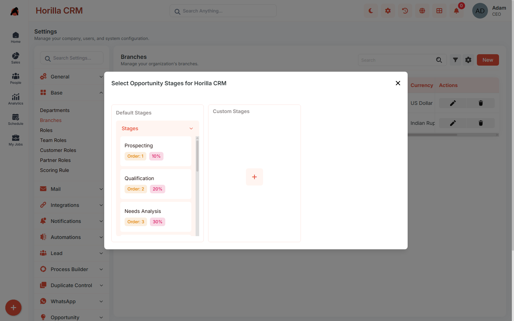
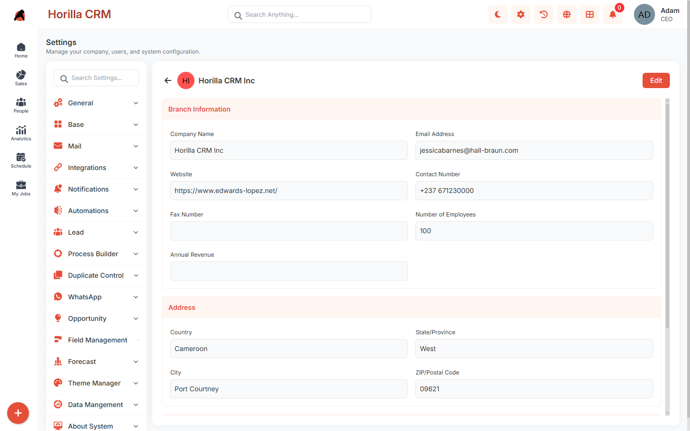

Introduction
The Branch & Department module manages multiple business units and their internal structures inside a single system. Branches, also called companies, keep their own company details, localization settings and operational configuration while remaining integrated with the wider CRM.
Departments sit within branches and provide hierarchy and team alignment, which supports reporting and access management. Creating a branch also triggers lead and opportunity stage configuration, so every branch has its own sales processes from the start.
Departments
1. Accessing Departments
Navigation: Settings → Base → Departments.
1.1 Department Management
Purpose: define organisational departments that categorise users and structure business operations.
- Departments provide hierarchy and team alignment, supporting reporting and access management.
- They represent units such as Sales, Marketing or Support.
- They group users, align responsibilities and support departmental reporting.

Branches (Companies)
2. Accessing Branches
Navigation: Settings → Base → Branches. From here administrators can view, create and manage branches.
2.1 Branches list view
All branches are displayed in a structured table.
| Column |
|---|
| Company Name |
| Email Address |
| Number of Employees |
| Headquarter |
| Currency |
| Actions |
- Actions: edit branch details, or delete the branch.
- Search and filter options give quick access to a particular branch.

2.2 Create a new branch
Click New to open the creation form. Two modes are offered — Multi-Step Form and Single-Step Form — and you can switch between them at any point using the toggle at the top of the form.
Multi-Step Form
Purpose: guided, structured creation spread across several steps.

| Step | Fields |
|---|---|
| Step 1 – Basic Information | Company Name, Email Address, Website, Company Icon, Contact Number, Fax Number |
| Step 2 – Business Details | Annual Revenue, Number of Employees, Head Quarter (toggle) |
| Step 3 – Location & Locale | Country, State/Province, City, ZIP/Postal Code, Language, Time Zone |
| Step 4 – Preferences | Currency, Time Format, Date Format, Date Time Format, Activate Multiple Currencies (toggle) |
Single-Step Form
Purpose: quick creation when all the information is already to hand.
- Every field appears on one page.
- There is no step-by-step navigation.
- Data entry is faster.
- Switch to the Single-Step Form using the toggle at the top of the form.
- Enter all the required details on the single screen.
- Click Save.

2.3 Automated stage setup after saving a branch
Saving a branch automatically opens the sales process template windows.
Step 1: Lead Stage template
- The Lead Stage configuration window opens immediately after the branch is saved.
- Administrators can select, reorder and configure lead stages.
- Configurable options are the stage name, order number, probability percentage and whether the stage is marked Final.
- Both default and custom stages are supported.

Step 2: Opportunity Stage template
- Once lead stages are saved, the Opportunity Stage configuration window opens automatically.
- Administrators manage the opportunity pipeline stages with order, probability and Final marking.
- Both default and custom stages are supported.
As a result, each branch starts life with a standardised sales process.

2.4 Branch detail view
Clicking a branch opens its detail page, organised into sections:
| Section | Contents |
|---|---|
| Company Information | Name, Email, Website, Contact Number, Annual Revenue, Number of Employees |
| Address | City, State/Province, Country, ZIP/Postal Code |
| Localization | Time Zone, Language, Currency, Time Format, Date Format |
| Multi-Currency Status | Whether multiple currencies are activated |
An Edit option on the page updates the branch details.

Benefits
- Multi-branch management: several business units organised under one CRM.
- Automated sales stage setup: lead and opportunity pipelines are pre-configured as soon as a branch is created.
- Customisable sales processes: default and custom stages are both supported.
- Comprehensive company profiling: contact details alongside business metrics.
- Advanced localization: timezone, language, currency and date/time formats.
- Multi-currency support: multiple currencies per branch.
- Centralised data management: all branch details kept in organised sections.
- Scalable operations: suited to organisations expanding across regions.